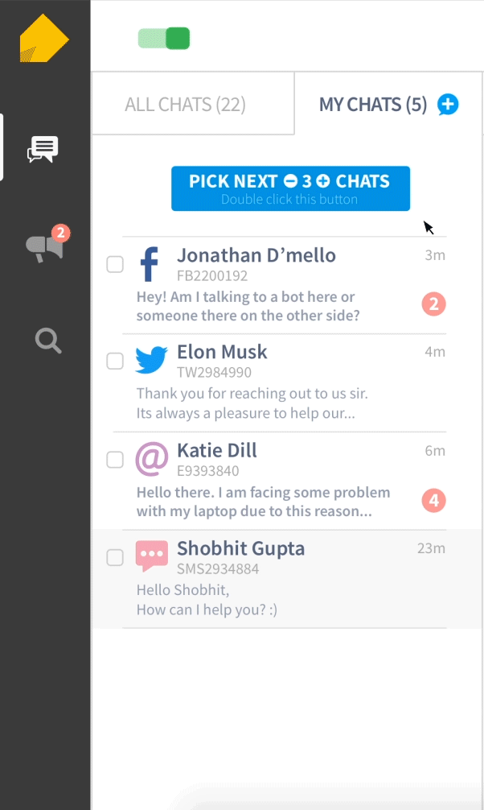

Old flow for picking up new chats

New flow for picking up new chats
At IMImobile, we are transforming the way businesses interact with customers. We have a lot of blue chip clients using and appreciating our products across the globe.
IMIconnect, developer Platform-as-a-Service to create and deploy customer journeys rapidly. With IMIconnect, we sit at heart of legacy systems of businesses and modern customer communication channels to provide automation
of interactive customer journeys. Categorisation of our product lies in the intersection of iPaaS (integration Platform-as-a-Service) and cPaaS (communication Platform-as-a-Service).
I also lead the design for IMIchat,
modern multi-channel messaging platform meant for contact centre teams to support customer queries.
I lead end-to-end research and product design for both IMIchat and IMIconnect. Apart from my core responsibilities of product design, I am responsible for:
IMIchat is CX SaaS for contact centres.
I worked on IMIchat's chat console redesign. But because it is not released yet and IMImobile doesn't put out their software in public, it won't be possible for me to show my work in details.
But
hey, I will be explaining in detail one of the features I built, that is, 'Chats Pickup from Common Queue'.
For IMIchat's redesign, I created all the persona for customers, agents and their managers. Following that, I set following 3 high level goals that are valid for any feature
This feature is analogous to real life offices. If you are working with other colleagues and have hundreds of files to finish, everyone will take 4-5 files each and will start working. As soon as anyone finishes off their files, he/she will pick up more
files from the common stack.
This is exactly what happens in contact centres. Customer queries lands in common queue and each agent picks up queries in his/her queue to solve it. Picking up queries from common queue is “Chat pickup feature’.
A lot of problems were discovered during primary research and data analysis as follows:
As our data suggested that users had problems in understanding few existing features, we laid down following guidelines:
As we wanted to give a slick and pleasing experience to agents, I started out design with following principles:
Micro-interactions play a very important role in overall understanding and usability of the product. I give a lot of care how animation and states have to be while designing any product/feature.
As animation provides feedback to the user, therefore
animation has the power to reduce errors by user as well. For our features, I follow guidelines adapted from NN group's research of feedback.
Making huge changes in the platform which is used for an average of 8hrs/day by thousands of users will result in catastrophe for customer support, we planned to make changes in phases.